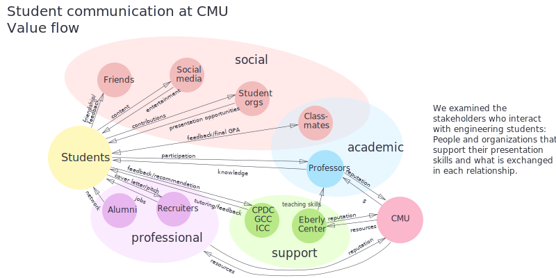

Our research plan comprised literature reviews, competitive analyses, and interviews to understand:
- What skills were targeted and cultivated by campus resources
- How students felt about their communication skill development
- What alumni thought of their curriculum retrospectively
Literature review
According to literature we have found online, researchers found that employers look for people who make clear presentations, work well in teams, listen properly, and solve problems collaboratively. Exercises such as presentations, group discussions, and instructing each other to complete a task helped students practice these skills.Additionally, our team studied published academic papers and reports scrutinizing the varied success of educational methodologies. These studies included the examination of a K-12 school in London with innovative peer-centered learning methods, the advocacy of both one-on-one counseling sessions with teachers and group sharing, the exploration of optimized practice frequency, and the use of automated feedback for drafts.
Competitive analysis
We compared CMU's offerings to those at peer institutions, researching how they support the development of their students' communication skills. The selected peer institutions were those that CMU’s Office of Institutional Research and Analysis benchmarks against.Resources we explored included career center programs,
frequency and scope of written/oral assignments across disciplines,
extracurricular offerings (student journalism, debate clubs, etc),
use of peer review methods, and student/alumni contact. One notable finding was the use of
online peer review forms in the 2.009 Product Engineering Processes course at MIT, paired
with instructions and videos to teach students how to successfuly conduct the peer review.
Interviews
We interviewed the following people:- Assistant Director of the CMU Global Communications Center (GCC)
- Career & Professional Development Center (CPDC) Career Consultant for Computer Science
- Retired English professor David Kaufer
- An alumnus who had studied psychology and art
- An alumna who had studied undergraduate computer science
- An alumna who had been an international student
- A number of current students
FACULTY & STAFF
First we focused on understanding the resources that were available
on-campus and their relative visibility and perceived effectiveness.
To that end, chose to interview faculty and staff members at various
support centers designed to coach students with written and oral assignments.
Faculty and staff who teach technical students writing skills focus on linear thinking and writing about concrete events that have happened. This comes into play during the job search as students write cover letters and speak during job fairs and interviews. In both cases, faculty and staff find the use of frameworks — basically, simple formulas — as useful ways to help students structure their writing. The Career and Professional Development Center (CPDC) and the Global Communication Center (GCC) are two student support organizations on-campus that have appointment-based models. However, both organizations have peak times around certain events or parts of the semester where there is a lack of available appointments.
STUDENTS & ALUMNI
Among our findings was the discovery that although there is a generous collection
of resources in place on campus, many students are unaware of them or
find them formulaic and impersonal, which discourages return visits.
Students often get frustrated with the GCC because they don’t have enough tutors to meet demand
and appointments are sometimes too short.
In general, when it comes to seeking help and resources, when students get
nervous sometimes they shut down and don’t seek assistance.
Alumni often missed events that could have been helpful because they didn’t know about them. When alumni faced a gap in their skills, they often pursued online articles or watched video tutorials — for example, on Lynda. In some cases, CS students found their peers to get very emotional and communicate poorly when they were under high stress or pressure.

Another insight our team gathered was the value placed on content over delivery. Engineering students are often evaluated for the substance of their work at the expense of feedback that targets the craftsmanship of presentation. In conversations with stakeholders at the Career and Professional Development Center (CPDC), we learned how students at job fairs often default into presenting themselves as a laundry list of skills, neglecting to present a narrative arc of growth and reflection. As a result of these findings, we decided to focus our design concepts on solutions that crafted presentation skills for students in undergraduate engineering programs.
In order to examine how presenting fits into CMU courses, we traced a typical student's journey through preparing for an in-class presentation, including seeking guidance from support organizations. We also broke down the components of verbal presentation to help us focus our design.